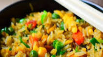

Baked Fried Rice Recipe

This recipe is got from allrecipes website (Baked "Fried" Rice.
By Chef John)
Description
This is an easy oven method that will produce very classic fried rice,
with the perfect flavour and texture. Just like rice pilau, the grains of
rice get coated in fat before absorbing the cooking liquid, ensuring
plump, tender, separate grains with no sticky clumps. Just adjust cooking
time if using a different kind of rice or pan size. Garnish with green
onions and serve with a runny poached egg on top if desired.
A cup of white rice takes about 17 minutes. For larger amounts may take a
few more minutes. Leaving it covered on the oven for a few minutes after
it’s tender will allow it to finish absorbing all of the water and then
fluffing it with a fork will get your rice nice and …well, fluffy.
Ingredients
- 2 cups long-grain white rice
- 2 tablespoons canola oil
- 1 tablespoon sesame oil, or to taste
- 3 cloves garlic, crushed
- ½ cup sliced green onions
- ½ cup diced red bell peppers
- ½ cup diced carrots
- ½ cup green peas
- 1 cup diced ham
- 1 pinch salt to taste (Optional)
- 3 cups chicken broth
- 3 tablespoons soy sauce
- 2 teaspoons chile paste (Optional)
Steps
- Preheat the oven to 400 degrees F (200 degrees C).
- Place rice in a large baking dish. Drizzle in canola and sesame oils; toss to coat rice completely. Add garlic, green onions, bell peppers, carrots, peas, and ham. Season with salt. Stir until well combined.
- Combine chicken broth, soy sauce, and chile paste in a pot over high heat. Stir and bring to a boil. Pour on top of the rice and stir briefly. Cover top tightly with heavy-duty aluminum foil.
- Bake in the preheated oven for 32 minutes. Remove and let stand for 10 minutes. Uncover; fluff rice with a fork. Taste and adjust seasoning.
- Increase oven temperature to 475 degrees F (245 degrees C). Return to the oven until rice is browned and crusted, about 10 minutes.